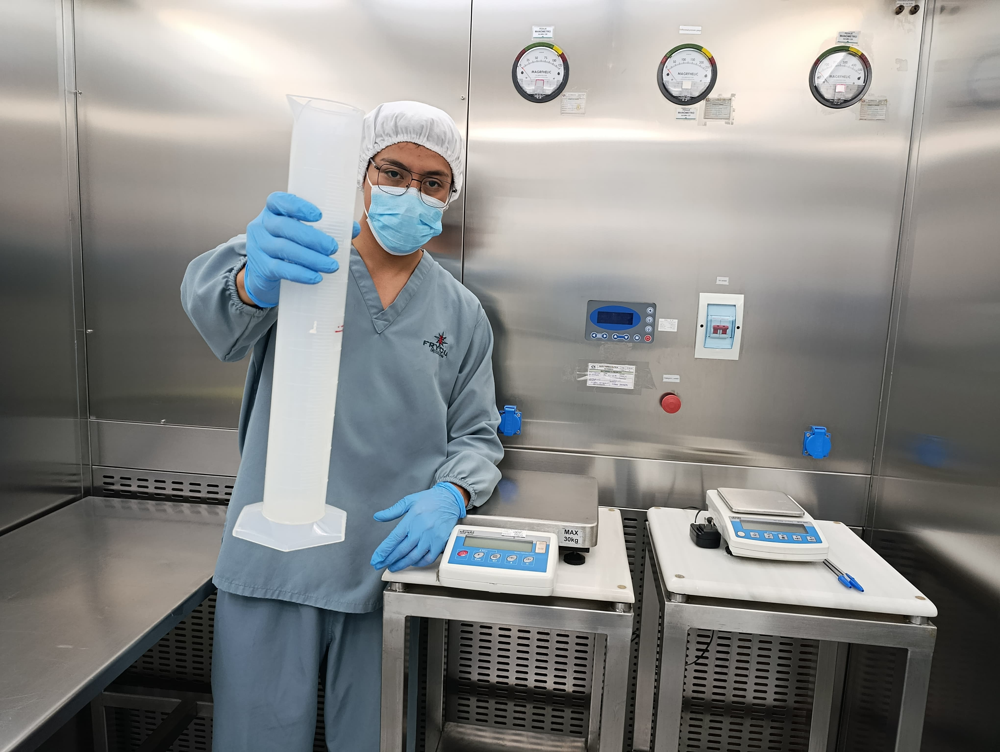

Bienvenido a las Buenas Prácticas, Donde Hasta el Aire Tiene Reglas
En este sitio, las cosas no se hacen “más o menos bien”. Aquí, las cosas se hacen exactamente bien, porque lo que producimos puede terminar en el cuerpo de una persona, o influir directamente en su salud. Suena serio, y lo es, pero también es un lugar donde se aprende, se crece, y sí, también se ríe (aunque a veces sea detrás de un cubrebocas).